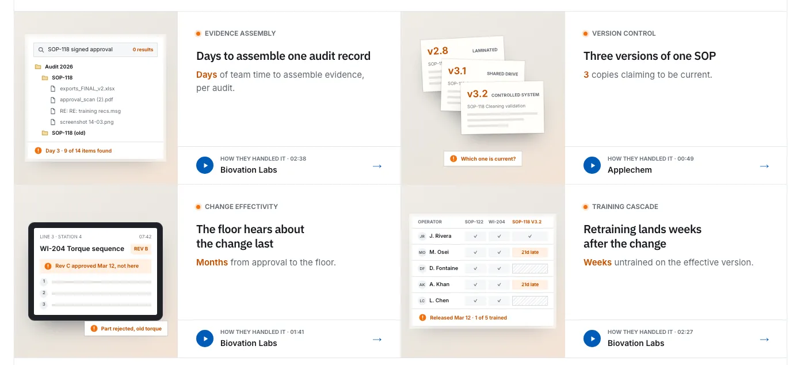
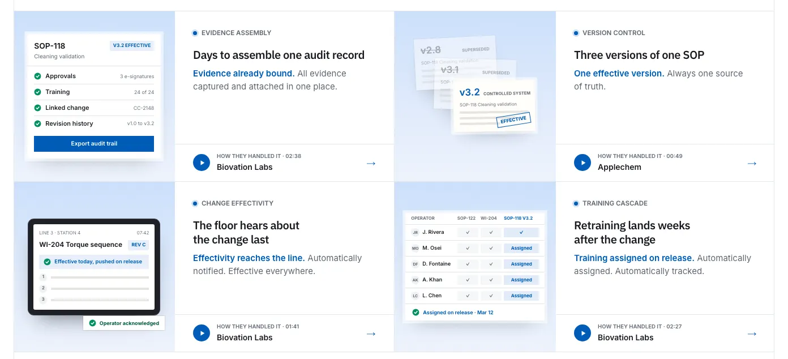

Rebuilding a website is never easy, especially when the people reading it run quality, regulatory and operations in medical devices, pharma and aerospace. They have seen every eQMS brochure ever printed, and they can tell a feature list from a real workflow in about three seconds.
We started from an empty Next.js app in May. Over four months we threw away far more than we kept. This post isn't a tour of every page. It's about the handful of decisions that stuck, the ones that started on one page and ended up on all of them, and the one that changed how a page reads: telling a single story from the first line to the last.
One record, one story
For most of the summer, our industry pages were a collection of good sections. The hero showed a change record. The next section showed a different decision trail. The role cards had their own examples, the deadlines board had its own, and the cost table had its own. Every section was accurate, and none of them connected to the others. A reader finished the page having seen ten examples and remembering none.
So we rebuilt the medical devices page around one story, and made every visual on the page play a part of it. Pouch seal breach complaints come in on line 2. A CAPA opens on the spike. The fix is a change to the sterilization SOP, from Rev C to Rev D. That change touches six other records. A lot goes on hold. Months later, an FDA 483 asks for the rationale.
The hero claim comes straight from the middle of that story: your QMS approves the change, not the six records it touches. The animated card beside it is CC-2148 working through those six records.
The next section follows the same change through its approvals: raised by engineering, impact assessment bound, design and cross-functional review, a Part 11 signature, and sealed as an audit trail. The headline says what the whole page is arguing: the decision lives in the thread, not the status field.
The role cards don't switch to new examples. Each seat sees its own piece of the same story: quality sees CC-2148 in review, engineering sees SOP-118 moving to Rev D and the device master record it affects, regulatory sees the risk file, validation sees the EO cycle revalidation, and operations sees lot 22-114 on hold.
The deadlines board shows the clocks the story starts: the MDR report due in 24 days for CMP-311, the recall scope for lot 22-114, and the 483 observation that the sterilization change rationale was never shown. The cost ledger then prices the same three events. By the time you reach it, you've watched these records move for the whole page, so the numbers don't read as abstract.
We didn't add a single section to do this. The page has the same structure it had before. What changed is that every visual now answers to one record.
What the story needed
A story made from records is only convincing if it holds together, so it came with rules we hadn't needed before.
One role per name. The page has a cast list, and each person does one job everywhere they appear. When we tested the page on a panel of six synthetic buyers built from our ICP, five of the six said the spine helped them follow the page. The main complaint was that we had reused two names in different roles. A reader who notices that stops believing the story, so we fixed it and made it a rule.
Current citations. The same panel flagged regulation references from before the QMSR. A quality lead will spot an outdated section number faster than any design flaw, so every citation now follows the current numbering.
Nothing invented. The fear each story starts from comes from our Notion research on that industry, not from a copywriter's idea of drama. Names and record numbers are illustrative. The problems are real.
Every industry, its own spine
Once the medical devices page worked, the same approach was the obvious thing to ask of every industry page, with a different story each time. Pharma follows DEV-4471: an out-of-spec result in an executed batch record, traced back to an excipient supplier's process change that nobody assessed. The CRO page follows DEV-2087: Sponsor B's Study 03 missed a protocol-required procedure because the site was never trained on amendment 2, and Sponsor B's audit should only ever see Study 03's evidence.
Two things carried across unchanged. The first is the sentence: the decision lives in the thread, not the ___, where each industry fills in the place its decisions get lost: the status field, the batch record, the eTMF entry. The second is the hero. When every industry hero used the same change list, the note was that they all looked the same. Now each industry gets its own kind of record, and no two share one: a batch record for pharma, a multi-sponsor board for CROs, a control chart for labs, a formulation change for chemicals, an 8D for automotive, a first article inspection for aerospace. The headline names the moment that record animates.
The record is the unit
The spine only works because of a decision from July: the site's product visuals are stylized on purpose. Real flows, restyled, never a one-to-one screenshot, because the real app will always drift away from any screenshot and a marketing page shouldn't promise it won't.
The first stylized attempt went too far: floating cards, arcs and oversized headers that could have belonged to any SaaS product. The correction was that the unit is the record. Every scene is one recognisable Unifize record view (header, state, owner, the thread, the checklist) and only its contents change. That's what makes the spine possible: when CAPA-2140 shows up in four different sections, it looks like the same record every time.
The frame came next. Every pose uses the same window width, with a still camera, so the product never seems to change size as the story moves. To show only the record, we remove the inbox and nav columns instead of cropping them, so the window keeps its edges and shadow. The inbox only appears when the inbox is the point. This one frame now runs on the homepage, the platform page, the four product pages, the solution journeys and every industry page.
Rust is the cost
The coordination tax started as a standalone explainer page in July: the hours people spend chasing approvals, re-keying data and waiting on email, paid every day and budgeted nowhere. It became an assessment, then a homepage section. In September it got a colour of its own.
The note was that the site used too much blue, but that any new colour had to be there for a reason. So the colours got jobs. Rust is the cost Unifize removes, blue is Unifize and the answer, and grey is the real work. That split now runs through the homepage tax grid, the platform page's evidence band, every product page's problem board and every industry page's cost ledger. You can tell the problem from the fix before you read a word.
One takeaway per section
The note that shaped the spine came from a section on the medical devices page: focus on one key takeaway instead of handing out many different ones. We tried taking that literally and reduced the section to a plain text diagram. That was rejected too, because it said nothing. One takeaway still needs a rich visual. It just needs every part of that visual to prove the same point.
The rule now: write the section's single takeaway as its headline, then draw only what proves it. Anything secondary becomes one closing line with a link, never a second grid.
The product pages show the rule most clearly. Each had a problem spotlight and a separate before-and-after ledger, about 2,770 pixels between them. They're now one board, around 1,010 pixels, with a single switch between Today and With Unifize.


The first version of those cards was four white windows with the same title bar, and they all looked alike. The rule that came out of it: vary the object, not just the rows. A shared drive, three competing copies of an SOP, a tablet on the line, a training matrix. Each card gets its own shape, so you can take in the whole board at a glance.
The rails, everywhere
On September 22 the homepage took a layer of structure from a set of reference sites: vertical rails that every section sits between, hatched bands that separate one idea from the next with small crosses where they meet the rails, and a blue square in place of eyebrow icons. The page opens and closes on the same charcoal, and everything in between is light.
It was meant for one page. Within two days it was the site's grammar: pulled into a shared stylesheet, then carried to the platform page, the four product pages, the medical devices page, the solution pages, every industry page, the about page and the blog.
The rails worked because they suit the subject. They make a page feel ruled, like a controlled document, and that's the world our readers work in. The close followed the same path: the quality page's closing section, a centred mark with a two-part claim, became the one close every railed page uses, with copy written for each page.
Ruled, then written
Once every page had rails, the motion had an obvious idea to follow: the page is ruled, then written. The rails draw down first. Then the headline words rise out of a 4px blur, 28 ms apart. The sub follows at 220 ms, the buttons at 300 and 340 ms, and at 460 ms the product window tilts up into place.
The first version felt slow. The note back was to make it crisper, so every beat is now 450 to 900 ms on a hard ease-out, and the page is at rest in about 1.3 seconds. Only type gets blur. Distances stay between 6 and 24px, with no bounce and no glow.
Scrolling uses the same idea more quietly. When a hatched band comes into view, its top rule draws left to right, its bottom rule right to left, the hatch wipes across behind them, and the crosses turn a quarter into place.
Because the motion lives in one stylesheet that every railed page opts into, the home, platform, product, solution and industry pages all enter the same way.
What didn't stick
For every decision above, a few didn't make it. The site went through a dark, typographic phase, a noir document page, a 3D-chart industry template and a Blender-rendered facility hero before it moved onto the rails.
Some of these left something behind. The June template's name, decision trace, became the idea at the centre of every industry page. The July explainer became the rust. What we dropped, we dropped for the same few reasons, and we wrote those down so they'd stay dropped:
- Drawn scenes and isometric illustrations lost to precise product UI every time.
- A sweep transition lost to a quiet dissolve.
- Glows and sheens lost to polish you barely notice.
- Coloured borders on a single edge lost to an icon and a label.
- Anything not yet shipped stays off the page.
What's next
The first version of the new site goes live at the end of September. Every industry page still to get its own spine is next, each with its own record, its own cast and its own clock.
If you work in a regulated industry and want to see your own version of CC-2148 run through Unifize, book a demo. Bring a change that touched more records than anyone expected.